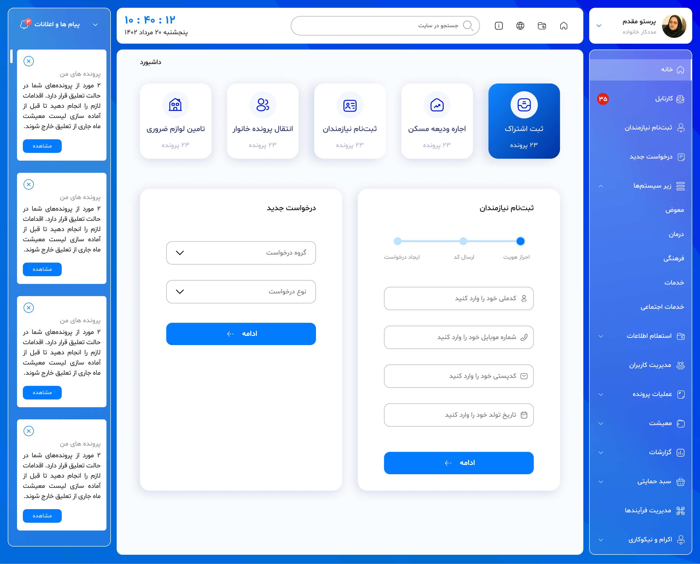
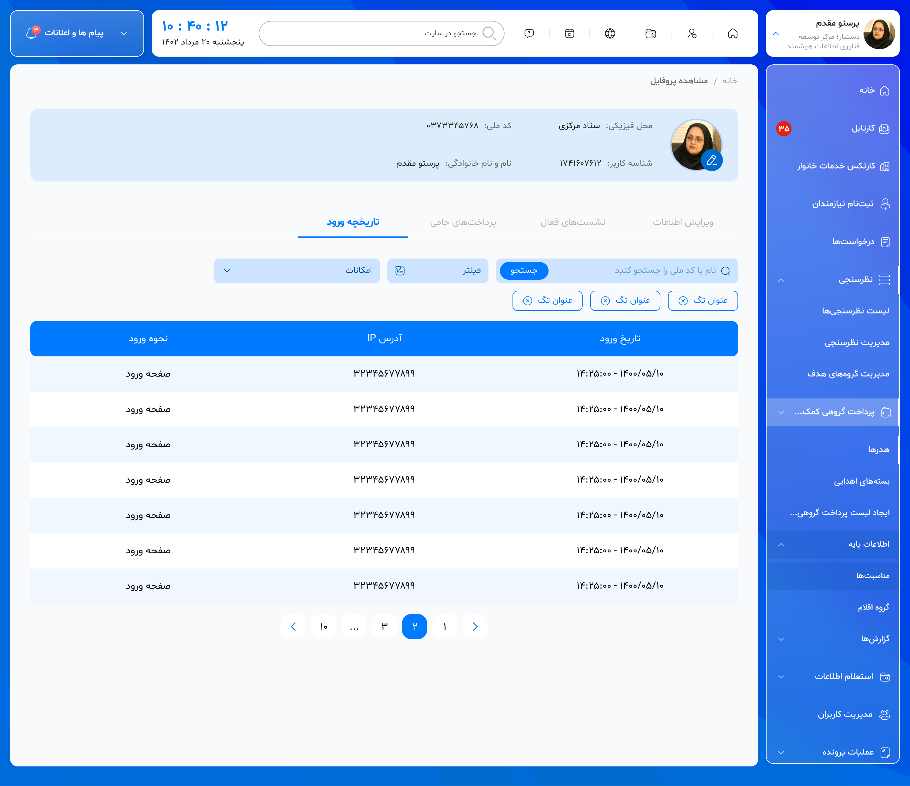
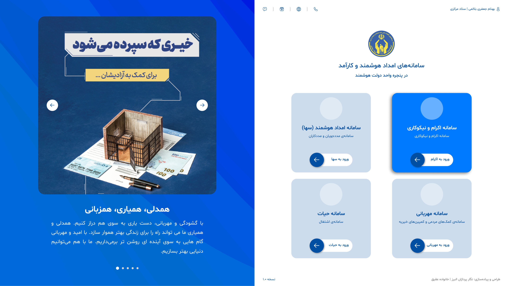

CASE STUDY / 02 · 2022–2024
Soha — Mehrabani Dashboard
Turning Mehrabani’s tangled admin dashboard into clearer paths for case work.

01 / OVERVIEW
The operations dashboard behind Mehrabani.
Soha is the management dashboard for the Mehrabani charity platform, used by support workers and beneficiaries. I owned the redesign from end to end: clarifying the product structure, untangling user flows, and designing the responsive UI.
- My role
- Product Designer
UI/UX Designer - Ownership
- End-to-end redesign, from flow mapping to final interface.
- Team
- Aghigh Family
Full-time · On-site - Timeline
- Sep 2022 — May 2024
02 / THE CHALLENGE
Too many paths, too little clarity.
The existing panel had many screens and overlapping routes for requests, reports, beneficiary records, and system administration. Users needed a more predictable way to find information and complete routine tasks.
03 / DESIGN PROCESS
From flow to interface
I mapped the existing structure, reorganised navigation and task paths, then translated the new flow into a consistent dashboard system for both audiences.
- 01 Audit existing screens
- 02 Map user flows
- 03 Rework information architecture
- 04 Wireframes
- 05 UI system
- 06 Responsive screens
01 / USER FLOWS
A clearer route through the panel
I mapped the fragmented routes and grouped tasks by intent so users could move from request to review, management, and reporting without losing context.

02 / INFORMATION ARCHITECTURE
Structure before styling
The revised information architecture keeps high-frequency tasks close at hand while separating operational areas that serve different roles.

03 / UI DESIGN
A shared visual language
I designed the dashboard screens, tables, filters, cards, navigation, and responsive states as one coherent UI system.



04 / OUTCOME
A calmer path for daily work.
Soha’s redesign brought the product’s routes into a clearer hierarchy and made the core panel easier to scan, navigate, and operate for both support workers and beneficiaries.
I was responsible for the complete redesign, including user-flow restructuring, information architecture, wireframes, UI design, and responsive screens.
05 / REFLECTION
Clarity is a product feature.
Soha reinforced how much a well-structured flow can reduce cognitive load before any visual polish is added.